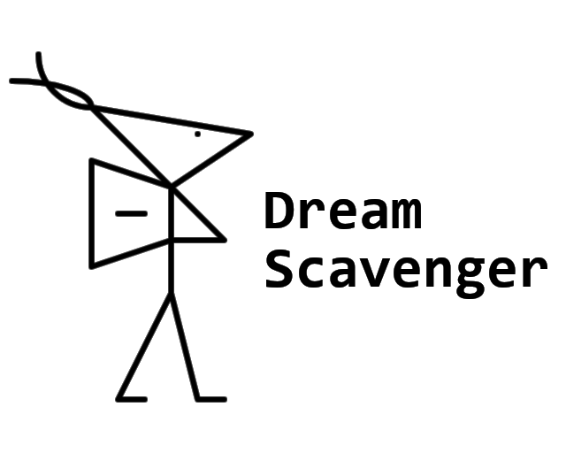

Dream(s) Scavenger
Маленькая видеоигра для геймджема Ludum Dare; текстовая история о Падальщие Cнов – страннике, собирающем частички, которые вызывают резонанс в его душе. Через эти частички он хочет "собрать себя" воедино.

2025-10-06 : первая версия (для геймджема)
: metaeye :